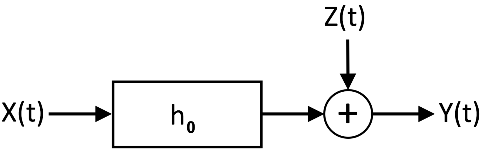
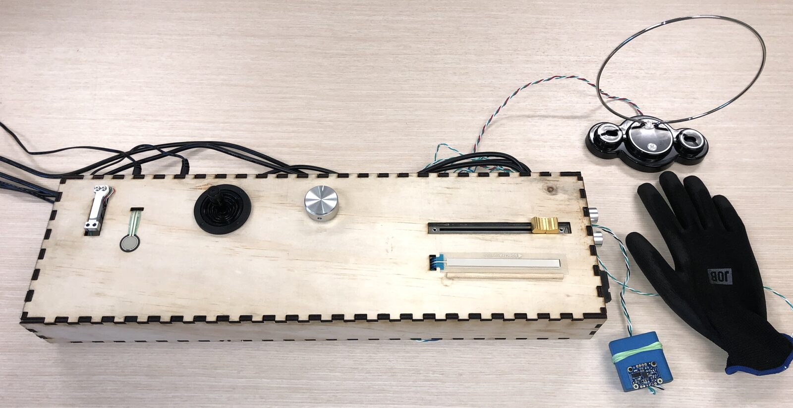
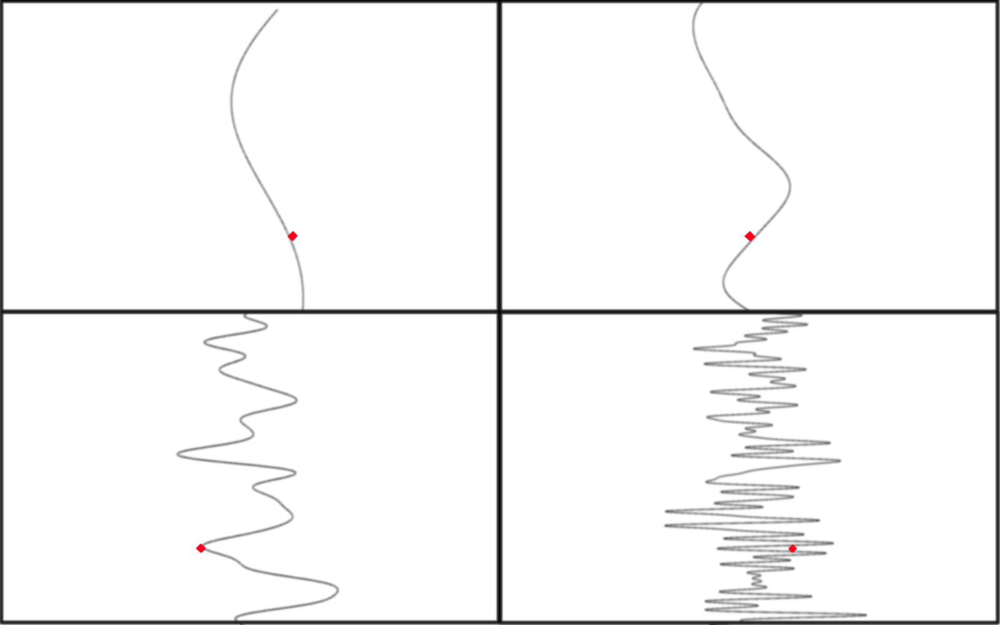
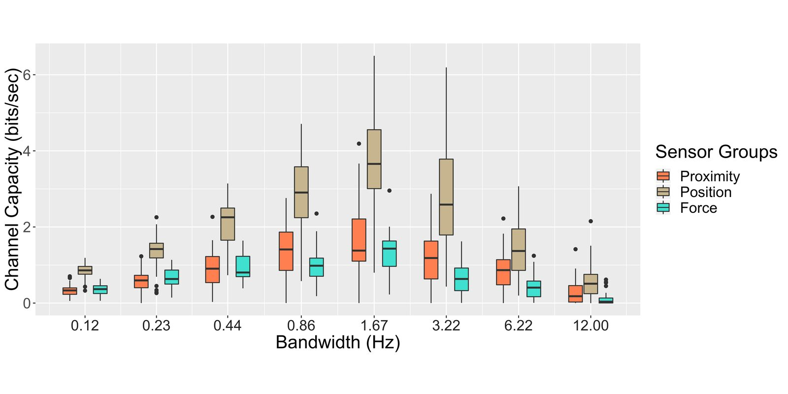
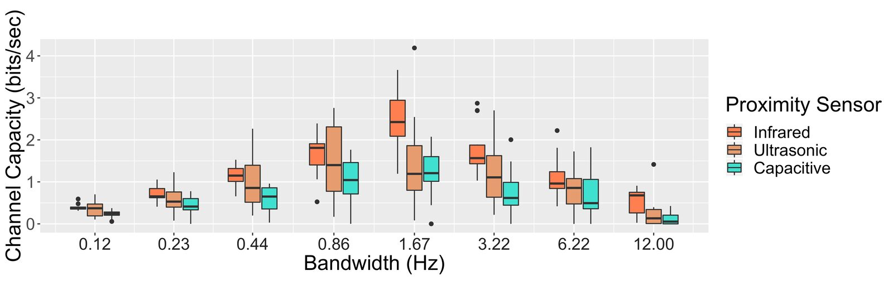
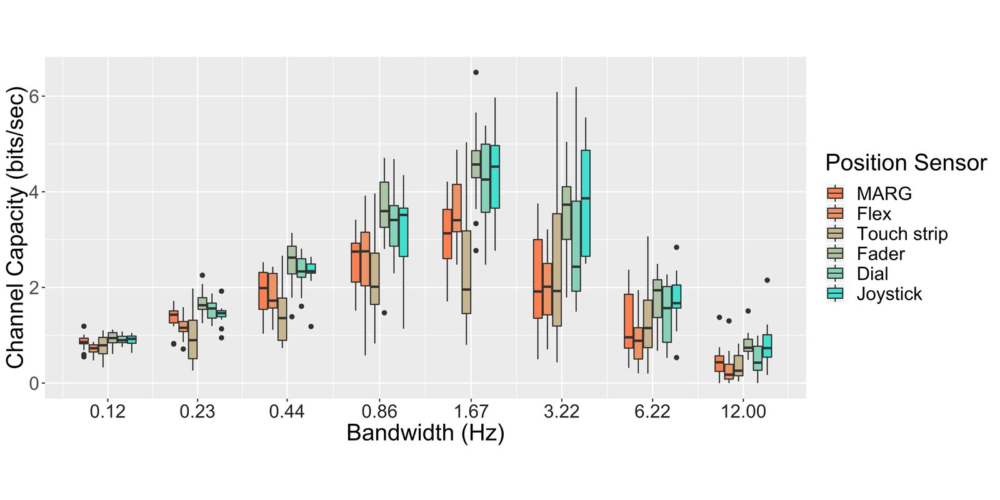
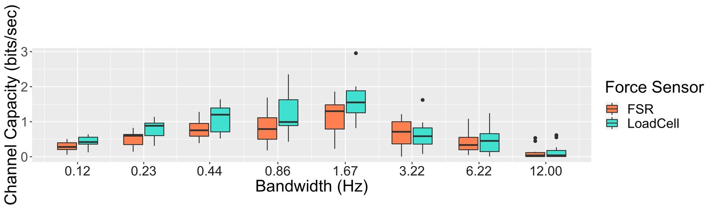

Using a Pursuit Tracking Task to Compare Continuous Control of Various NIME Sensors
Abstract
This study investigates how accurately users can continuously control a variety of one degree of freedom sensors commonly used in electronic music interfaces. Analysis within an information-theoretic model yields channel capacities of maximum information throughput in bits/sec that can support a unified comparison. The results may inform the design of digital musical instruments and the design of systems with similarly demanding control tasks.
Author Keywords
User interface design, throughput, continuous control, channel capacity, Shannon-Hartley theorem, mutual information, information theory, sound and music computing
CCS Concepts
•Human-centered computing→HCI design and evaluation methods; User studies; Usability testing; User models; Interaction design theory, concepts and paradigms; Empirical studies in interaction design; Interaction devices; •Computer systems organization → Sensors and actuators
Rationale
Continuous control or “analog” sensors are often included in the design of digital musical instruments. Recommendations from craft knowledge and from related fields have been made to inform on sensor attributes [1] and mapping strategies, as well as to improve the sensing quality in instrument designs [2]. Interest in empirical human-computer interaction (HCI) studies of such sensors has also developed, with investigations of sensor choice and preferences [3][4] as well as in satisfaction with sensor use [5] in response. With evidence that continuous control may afford great expressivity [6], a better understanding of performance using continuous control sensors in musical contexts may be informative.
Hypothesis
A comparison of such performance with several different continuous control sensors with one degree of freedom may reveal significantly different capabilities of musical control afforded to performers. A resulting common unit rate of bits/sec across sensors and across rates of movement could facilitate comparison of sensors using values well established in HCI research [7] and would enable consideration of affordance for a musical context with an approximate maximum information rate. See Appendix A for an example of information rates for a musical parameter.
Model
This study employs a model [8] developed in recent studies of pursuit tracking with continuous-control sensors as a comparison [9] and in relation to pointing [10], extending earlier work [11][12][13][14][15] In the present model, it is assumed that a performer attempting to express a signal as a continuous input of a sensor apparatus will generate a signal with some difference between these two, labeled , which may be attributed to neuromotor noise, interference, sensor noise or other causes of error (see Figure 1). The user’s input signal is modeled to be attenuated by the constant factor , which represents the deterministic component of a user’s performance. For example, if a user gives a very accurate performance, then ≈1, but if the user does not perform so accurately, then <1 to give room for the variance of to contribute to the variance of .


Fig. 1: A model of a user’s performance in which is a gain factor that models the deterministic component of a user’s performance, and Z(t) models the random noise in the performed signal Y(t).
Considering this model as a communications channel, concepts from information theory may be applied to observe a human-computer system with a particular sensor and estimate the channel capacity of information as a maximum rate in bits/sec.
Contemporary HCI research practice encourages consideration of the motivations of users and of the environment of interaction [16]. In contrast, the model for the present work does not distinguish between diverse motivations of performers and may thus be applied in different motivational contexts. Although, it does presume a general intention of control. Similarly, influences of the environmental situation of the human-computer system are not defined by the model. In the case of the experiment described below, the model is applied in analysis of performance following minimal training with an apparatus in a quiet room in the presence of a proctor.
Apparatus
An apparatus was constructed to include an array of sensors in one experimental device which could be connected to one laptop. Included were eleven inexpensive continuous control sensors for comparison. These included a knob potentiometer (dial), a slide potentiometer (fader), an infrared proximity sensor, an ultrasonic proximity sensor, a capacitive/inductive proximity sensor, an inertial measurement unit (IMU or Magetometer/Accelerometer/Gyroscopic-MARG) sensor, a force sensing resistor (FSR), a load cell (bar 500 g), a “soft” potentiometer (100 mm touch strip), a small joystick, and a flex sensor. Details of each sensor may be found in Appendix B. A laser-cut plywood enclosure housed the sensor and microcontroller components, and provided a tabletop control surface for the sensors that require one.


Fig. 2: The sensor apparatus, including eleven sensors. Infrared and ultrasonic proximity sensors are mounted vertically at right. The glove includes a removable flex sensor within its index finger sleeve.
Three Arduino Micro microcontrollers collected data from the sensors, separated as required by modified firmware. One microcontroller collected data from several analog sensors through its analog input pins. A second microcontroller collected data from two of the digital sensors — the inertial measurement unit and ultrasonic sensors — which communicated over I2C or in digital pulse measurements. The infrared sensor input was also collected on this microcontroller in order to isolate noise effects from this sensor on other analog sensor voltages. The third microcontroller’s counter/timer system was used to accumulate changing values from the oscillator of a capacitive/inductive sensor circuit. External reference voltages were provided by two 5V power adapters connected to a conditioned power supply.
Each sensor was measured in a calibration procedure to model its input characteristics and establish a common numerical range with an approximately linear curve through function mapping and signal conditioning. To reduce noise in the capacitive and ultrasonic sensor signals, banks of one-pole low pass filters in series were applied with limits of 6 and 12 Hz respectively. As a consequence, a discernible delay of sensed movement was introduced into these sensors’ signals.
Some of the sensors hold a persistent value other than a resting state at the maximum or minimum end of a range without user interaction. These include the MARG, fader, knob, and joystick sensors. The flex sensor, due to its affixing within a glove, was persistently in a state of interaction with the subject while worn. The touch strip, load cell, FSR, ultrasonic, infrared, and capacitive sensors have a steady return state that is represented when disengaged. Such return values disrupt analysis, so instruction and assistance were provided to prevent accidental disengagement with the sensors. To assist participants in remaining engaged in continuous control with the touch strip sensor while looking at the display, a halved dowel was affixed beside that sensor to provide a reference anchor which would be felt while operating the sensor in the correct position.
Subject Pool
Fourteen subjects participated in the study. Each participant was either an undergraduate or graduate student at a research university. A small monetary incentive (20 USD) was offered to each participant with no requirement of study completion to receive the incentive. All subjects completed the study in full.
Experimental Procedure
Subjects were seated before a table holding the apparatus and the laptop which presented the visual interface on a 391 mm (diagonal) display. The target stimuli included eighty-eight target signals X(t) of twenty seconds duration. These signals were generated as wavetables of Gaussian-distributed noise, low-pass filtered at eight bandwidth limits spaced in logarithmic scale from 0.12 Hz to 12 Hz for randomization across the eleven sensors. Each signal was presented as a curve which descended across the screen from top to bottom with 2.5 seconds of preview visible before interfacing with the level of the cursor. A diamond-shaped cursor symbol’s position represented the current status of the sensor’s output for matching to the target curve (see Figure 3).
Subjects performed in eleven segments, one for each sensor, controlling with their preferred hand. The order of sensors was randomized for each participant trial. Each sensor segment began with a training phase, which presented three twenty-second signals of low (0.23 Hz), medium (1.67 Hz), then high (6.22 Hz) bandwidth limits for performance. Following the training, eight twenty-second target signals corresponding to each of the bandwidth limits were presented in random order for performance and recording with the sensor. Subjects were allowed to retry performances if they felt that one could be improved with an additional attempt. The full duration of a study trial ranged from 1 to 1.5 hours, dependent upon the extent of retrying and upon adjustment or configuration of the sensors.


Fig. 3: The cursor and pursuit tracking target curves of 0.23 Hz, 0.86 Hz, 3.22 Hz, and 12 Hz bandwidth limits. Image color inverted, contrast adjusted, and diamonds made red to enhance visibility.
Because the study was conducted during a period of pandemic conditions, participants and researchers wore masks for the duration of the study and disinfecting protocols were carried out within the duration of trials. No indications of discomfort or distraction resulting from these health and safety requirements were made.
Analysis
The channel capacity may be estimated with the Shannon-Hartley theorem [17], such that
The signal to noise ratio may be estimated as follows [10][18]:
The mean channel capacity at each bandwidth limit was calculated for each sensor. Before calculating the channel capacity, a constant time offset of maximum correlation was identified to best match the recorded gesture signal Y(t) to the target signal X(t) in time. The touch strip sensor data required conditioning that assigned an amplitude value of zero when the touch strip sensor was at rest (due to running off of the sensing area or applying insufficient pressure which would have otherwise yielded a value of -1.0).
Results
Two-way analysis of variance (ANOVA) indicated that the bandwidth limit, the individual sensors, and sensor groups had a statistically significant effect overall (p < 0.01). Paired t-tests (with Bonferroni correction) were also conducted for each bandwidth limit to compare if different sensors resulted in different channel capacities. Of the 440 comparisons, 163 were statistically significant (p-value of 0.05). Similarly, a comparison with paired t-tests was made for each sensor across changing bandwidth limits. Of those 308 comparisons, 146 were significant.
Sensors Compared in Groups
The sensors may be grouped according to the mechanics of their operation, and their results may be compared in these groups. Three groups are compared here: proximity, position, and force sensors. The proximity sensors include the infrared, ultrasonic, and capacitive/inductive sensors. The position sensors include the dial, fader, touch strip, flex, MARG (measuring 180 degrees of z-axis rotation with sensor fusion), and joystick sensors. The force sensors include the FSR and load cell sensors. Mean channel capacities for sensors in groups are plotted in Figure 4.


Fig. 4: A comparison of sensors in groups, categorized by their mechanics. Horizontal offsets were applied for visibility.
Across all bandwidth limits, the mean channel capacities of the position sensor group significantly exceeded that of the proximity and force sensor groups in comparison using Welch’s t-test with Bonferroni correction, with a greatest difference of maximum means of 2.34 bits/sec at 1.67 Hz (95% CI:2.01, 2.67; p < 0.01). Between those latter groups, the proximity and force sensor group mean channel capacities do not significantly differ across all bandwidths, with the exception of 3.22 Hz (95% CI:0.30, 0.85; p < 0.01) and 6.22 Hz (95% CI:0.22, 0.63; p<0.01) where proximity means were higher.
Proximity Sensors


Fig. 5: A comparison of the proximity sensors. Horizontal offsets were applied for visibility.
The highest mean channel capacity of the proximity sensors (see Figure 5) was shown to be with the infrared sensor, reaching 2.43 bits/sec at 1.67 Hz. Among the proximity sensors, the infrared sensor was found to have a significantly higher channel capacity than the capacitive sensor at all bandwidth limits below 6.22 Hz, with the exception of 0.23 Hz and 0.86 Hz.
The ultrasonic sensor observations had higher variance than the infrared sensor, including high enough values such that there was no significant difference of means at like bandwidths from the infrared sensor. The ultrasonic and capacitive sensors were not found to have a significant difference at like bandwidths.
It should be noted that the ultrasonic and capacitive sensors exhibited delay in response to movement as well as noise resulting from their design. The ultrasonic sensor’s 40 Hz sampling rate and the significant filtering necessary to de-noise the capacitive sensor may have caused poorer performance, resulting in a lower channel capacity. These sensors also exhibited significant noise characteristics, although it should be noted that the infrared sensor also was noisy in comparison to the potentiometer-based sensors.
Position Sensors


Fig. 6: A comparison of the position sensors. Horizontal offsets were applied for visibility.
The highest mean channel capacity of the position sensor group — indeed, of any group — was observed to be 4.53 bits/sec with the fader sensor at the 1.67 Hz bandwidth limit (see Figure 6).
Within the group of position sensors, the flex and touch strip sensors deviated below the other position sensors across a few bandwidths. For instance, at very low rates, performance with the flex sensor was significantly lower than the dial and fader sensors, and at 3.22 Hz its observed channel capacity was significantly below the fader and joystick sensors. At 0.44 Hz and 1.67 Hz, the mean channel capacity of the touch strip is significantly below that of the fader. Otherwise, this group of sensors could not be considered to differ significantly.
The maximum touch strip sensor mean channel capacity of 2.37 bits/sec at 3.22 Hz is lower than the mean of 3.98 bits/sec at 2.9 Hz of a related experimental trial with co-located target signal and sensor [10]. This could possibly be attributed to the separation of the presentation of the target signal from the sensor interface. The visual focus on the target signal X(t) prevents stable interfacing with the sensor. The provided guide rail was perhaps too low for some finger positions. Several participants adjusted the angle of their finger and struggled to remain engaged effectively with the sensor. It is also possible that at least some of the difference in this sensor’s channel capacity between these studies could be attributed to the shorter length of the 100 mm touch strip vs. the 200 mm touch strip of the prior study.
Force Sensors


Fig. 7: A comparison of the force sensors. Horizontal offsets were applied for visibility.
The highest mean channel capacity within the force sensor group was found to be 1.60 bits/sec with the load cell sensor at the 1.67 Hz bandwidth limit (see Figure 7). The load cell and FSR were not found to differ significantly at like bandwidth limits within the broader comparison of all sensors in pairwise t-tests and the application of Bonferroni correction. There is evidence of some non-normality and skew at some bandwidth levels. The higher means and higher maxima of the load cell, particularly at medium range bandwidth limits, suggests that for non-novice users, the load cell might tend to afford higher communication throughput.
Conclusions
There are many considerations that can lead to the choice of a particular sensor in a musical application, such as ergonomic relationships, appearance, power limitations, enclosure limitations, prior experience, etc. User control of the sensor would sensibly be a primary factor, and the results shown in this study may inform such considerations for continuous control. Position sensors were found to afford a higher information throughput than proximity or force sensors, as a group. These may be preferable for application to more demanding continuous control parameters. Further, the channel capacity findings for each sensor here may be consulted to support design for a range of control parameter mapping contexts.
With the limited time made available to participants in training and in completion of the tasks, these results should be considered commensurate with novice performance. The values and inter-relationships found in these results may best serve a context where an instrument is presented to non-musicians or in a passing engagement, such as that of a gallery or conference installation setting.
Additional practice would likely yield better control, reduced error, and therefore higher channel capacities. The practice and familiarity that comes from designing and testing the sensor apparatus led to considerably higher channel capacities achieved by the authors. A thorough study including extensive training should yield results more appropriate to support instrument design for a musical stage performance context.
Compliance with Ethical Standards
The study was conducted in compliance with the framework of institutional oversight as maintained by the associated research university’s institutional review board (IRB). Signed, informed consent was given by all participants.
Appendices
Appendix A: Musical Parameters as Information
A relationship from musical parameters to an information rate in bits/sec may assist in relating the results of this study to a context of musical goals. Upon defining a set of musical parameter limitations, an information rate per symbol may be developed across the ranges of those parameters [19]. As a simple example, if a digital musical instrument provides a range of one octave of discrete diatonic pitch values, there would be 7 available pitches. Assuming all pitch probabilities are equal (leaving aside that they likely are not), the maximum information rate is n bits per symbol.
If a score for such an instrument calls for a tempo of 60 beats per minute with an expectation of pitch transitions no shorter than half a beat apart and allowing for any available pitch value per note, then it shall require no more than approximately 7≈5.6 bits/sec of information to fully control the pitch parameter for such a performance.
The information rate demands of the pitch parameter may be lower, perhaps significantly lower, by reduction of probable pitches and extension of durations appropriate to a style or harmonic space. Design for these lower rates is certainly possible, but such a reduction may constrain, eliminating possibilities.
Appendix B: Sensor Information
Sensor | Model (if applicable) |
|---|---|
MARG | Bosch BNO055 |
Flex | SpectraSymbol 115mm |
FSR | Interlink 402 |
Load Cell | HT Sensor TAL221 |
Capacitive/Inductive | Customized version of prior art[20] |
Ultrasonic | ElecFreaks HC - SR04 |
Infrared | Sharp GP2Y0A21YK |
Fader | ALPS 100mm Slide Potentiometer |
Dial | Bourns PDB18 100K Rotary Potentiometer |
Touch strip | SpectraSymbol 100mm SoftPot |
Joystick | Adafruit Mini-Joystick (10K) |
Citations
- ↩Miranda, E. R., & Wanderley, M. M. (2006). New Digital Musical Instruments : control and interaction beyond the keyboard. A-R Editions.
- ↩Carolina Brum, M., & Wanderley, M. M. (2014). A Comprehensive Review of Sensors and Instrumentation Methods in Devices for Musical Expression. Sensors, Vol 14, Iss 8, Pp 13556-13591 (2014), (8), 13556.
- ↩Marshall, M. T., Hartshorn, M., Wanderley, M. M., & Levitin, D. J. (2009). Sensor Choice for Parameter Modulations in Digital Musical Instruments: Empirical Evidence from Pitch Modulation. Journal of New Music Research, 38(3), 241–253.
- ↩McPherson, A., Lepri, G., & others. (2020). Beholden to our tools: negotiating with technology while sketching digital instruments. NIME 2020.
Marshall, M. T. 2009. Physical interface design for digital musical instruments. Ph.D. Dissertation. McGill University. Montreal, Quebec, Canada.
↩Moro, G. 2020. Beyond key velocity: continuous sensing for expressive control on the Hammond organ and digital keyboards. Ph.D. Thesis. Queen Mary University. London, UK.
↩- ↩Soukoreff, R. W., & MacKenzie, I. S. (2004). Towards a Standard for Pointing Device Evaluation, Perspectives on 27 Years of Fitts’ Law Research in HCI. Int. J. Hum.-Comput. Stud., 61(6), 751–789.
- ↩Berdahl, E., & Blandino, M. (2020). Modeling a Musician Performing on a Digital Musical Instrument as a Communications Channel. In Extended Abstracts of the 2020 CHI Conference on Human Factors in Computing Systems (pp. 1–7). Honolulu, HI, USA: Association for Computing Machinery. https://doi.org/10.1145/3334480.3382841
- ↩Berdahl, E., Blandino, M., Baker, D., & Shanahan, D. (2016). An Approach for Using Information Theory to Investigate Continuous Control of Analog Sensors by Humans. In Proceedings of the Audio Mostly 2016 (pp. 85–90).
- ↩Blandino, M., Berdahl, E., & Soukoreff, R. W. (2020). An Estimation and Comparison of Human Abilities to Communicate Information Through Pursuit Tracking vs. Pointing on a Single Axis. In R. L. Boring (Ed.), Advances in Human Error, Reliability, Resilience, and Performance (pp. 247–257). Cham: Springer International Publishing.
- ↩Baty, D. L. (1969). Effects of display gain on human operator information processing rate in a rate control tracking task. IEEE Transactions on Man-Machine Systems, 10(4), 123–131.
- ↩Elkind, J., & Forgie, C. (1959). Characteristics of the human operator in simple manual control systems. IRE Transactions on Automatic Control, (1), 44–55.
- ↩Elkind, J., & Sprague, L. (1961). Transmission of information in simple manual control systems. IRE Transactions on Human Factors in Electronics, (1), 58–60.
- ↩Doubler, J., & Childress, D. (1984). An analysis of extended physiological proprioception as a prosthesis-control technique. Journal of Rehabilitation Research and Development, 21(1), 5–18.
- ↩Chan, R. B., & Childress, D. S. (1990). On a unifying noise-velocity relationship and information transmission in human-machine systems. IEEE Transactions on Systems, Man, and Cybernetics, 20(5), 1125–1135.
- ↩Harrison, S., Tatar, D., & Sengers, P. (2007). The three paradigms of HCI. In Alt. Chi. Session at the SIGCHI Conference on human factors in computing systems San Jose, California, USA (pp. 1–18).
- ↩Shannon, C. E. (1949). Communication in the Presence of Noise. Proceedings of the IRE, Proc. IRE, (1), 10.
- ↩Cover, T., & Thomas, J. (2006). Elements Of Information Theory (2nd edition). Hoboken, NJ, USA: John Wiley and Sons.
- ↩Silk, D. J. (1981). Information content of written music. Electronics & Power, 27, 330.
- ↩Nawrath, M. (n.d.). Theremin as a Capacitive Sensing Device. Retrieved from http://interface.khm.de/index.php/lab/interfaces-advanced/theremin-as-a-capacitive-sensing-device/index.html, last accessed January 8, 2021.